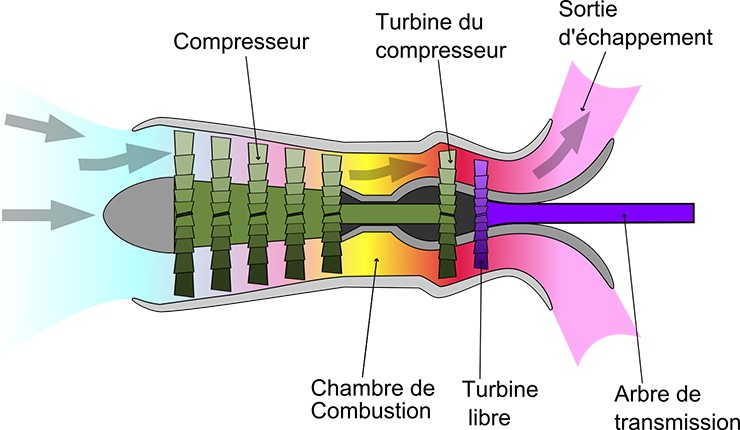

 세번째 항목으로는 우리가 하늘에서 자주볼 수 있는 헬리콥터에 들어가는 엔진이다.터보샤프트엔진은 터보제트엔진과 비슷하다고 볼 수 있는데 이 터보제트엔진에서 축을 하나 빼내어 우리가 알고있는 헬리콥터 날개(rotor blade)에 연결한것이다. 헬리콥터는 상대적으로 느린속도와. 수직상승 및 하강 이라는 특징을 가지고 있기 때문에 굉장히 헬리콥터라는 항공기에 최적화된 엔진이라 볼 수 있다.